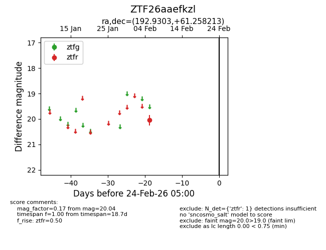
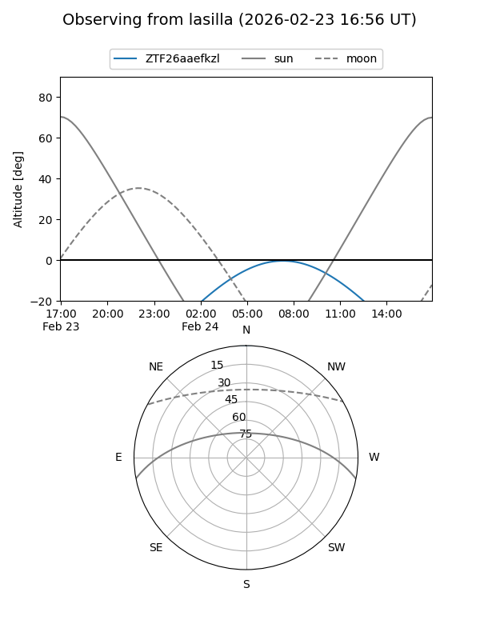
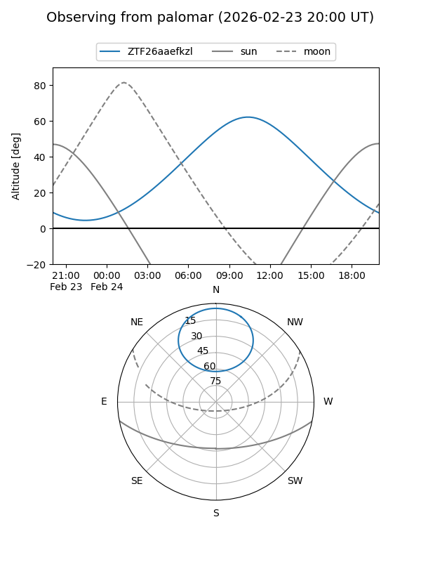

ZTF26aaefkzl
Target ZTF26aaefkzl at 2026-02-24 09:08
Aliases and brokers:
FINK: link
Lasair: link
ALeRCE: link
alt names
ZTF26aaefkzl (ztf,fink_ztf)
Coordinates:
equatorial (ra, dec) = 192.9303,+61.25821
equatorial (HMS+DMS) = 12:51:43.27,+61:15:29.57
galactic (l, b) = (122.8713,+55.87001)
Flags:
Photometry:
last ztfr=20.04
1 ztfr detections
Lightcurve

Visibility


Additional plots